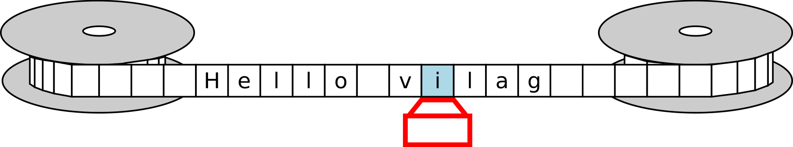
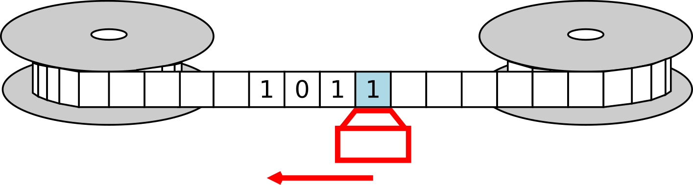

Turing gépei és a Brainfuck nyelv
Czirkos Zoltán · 2015.02.18 · Frissítve: 2015.02.15
Turing gépei és a méltán hírhedt Brainfuck programozási nyelv. Mit jelent az, hogy egy nyelv Turing-teljes? A „Mi tud a számítógép? Mi az, amire képtelen?” írás folytatása.
Alan Turing cikke óta tudjuk, hogy léteznek algoritmikusan megoldhatatlan feladatok. Például az, hogy olyan programot írjunk, amely bármely másikban képes megtalálni a szemantikai hibákat. Ennek bizonyítását ő igen szokatlan módon végezte el: képzeletbeli számítógépeket talált ki, és azokra írt programokat.
A gépek meglehetősen egyszerűek voltak. Egyszerűségük ellenére viszont ekvivalensek a mai számítógépekkel – amit azokkal nem lehetett megcsinálni, azt nem lehet egy mai számítógéppel sem. Innen ered a „Turing-teljes” fogalom. Egy programozási nyelvre azt mondjuk, hogy Turing-teljes, ha megoldhatók benne ugyanazok a feladatok, amelyek megoldhatóak egy Turing-géppel is. A C például ilyen: lekódolható benne minden algoritmizálható probléma. Ennél kevesebbet tudhat egy nyelv (bár akkor nagyon korlátozott lesz a használhatósága), ennél többet azonban nem. A legmodernebb programozási nyelvek sem többek ennél, legfeljebb tömörebbek vagy kényelmesebbek.
Egy nyelv Turing-teljességét többféle úton lehet bizonyítani. Például úgy, hogy megírunk benne egy programot, amelyik utánozza egy Turing-gép működését. Vagy úgy, hogy írunk benne egy értelmezőt (interpretert), amelynek a bemenete egy másik Turing-teljes programozási nyelven írt program – és képes lefuttatni azt. Ha képes utánozni egy teljes nyelvet, akkor, ha máshogy nem, azon a nyelven kell majd megfogalmazni a feladatot. De meg fogja tudni csinálni. Vannak más, bonyolultabb útjai is egy ilyen bizonyításnak.
Hello world Brainfuck nyelven ++++++++++[>+++++++>++++++++++>+++>+<<<<-] >++.>+.+++++++..+++.>++. <<+++++++++++++++.>.+++.------.--------.>+.>.
A Brainfuck (BF) nyelv egy rendkívül primitív programozási nyelv, amely mindössze nyolc utasítást ismer. Látván, hogyan fest benne egy Hello world program, érthető, hogy miért kapta ezt a nem szalonképes nevet ez az ezoterikus nyelv. Azonban ez is Turing-teljes, hiszen lehetséges benne olyan programot írni, amely egy Turing-gépet utánoz! Nézzük meg, hogyan működnek ezek.
1Turing gépének felépítése és működése
Az említett gépek felépítése a következő. Minden gép tartalmaz egy vezérlőegységet, egy programkártyát, és egy adatszalagot. Az adatszalag egy cellákra osztott tároló, amelyen tetszőleges szimbólumok (betűk, számok stb.) lehetnek. Minden cella egy szimbólumot tartalmazhat. A szalag egy író-olvasó fej alatt mozog, amelyik egyszerre mindig csak egy cellát lát. A kiindulási állapotban a szalag teljesen üres.
A programkártya egy táblázat, amely ún. állapotokra oszlik. A vezérlőegység tárolja azt, hogy éppen melyik az aktív állapot. A táblázat első két oszlopa egy állapotot és egy szimbólumot tartalmaz, második két oszlopa pedig egy tevékenységet és a következő állapotot.
A működés nagyon egyszerű. A vezérlőegység megnézi, hogy a szalagon milyen szimbólum található az aktuális pozícióban. Ezután az aktuális állapota és a beolvasott szimbólum alapján kiválasztja a nekik megfelelő sort a táblázatból. (Ezek egyértelműen ki kell jelöljenek egy sort, különben hibás a program.) Végrehajtja az ott megadott tevékenységeket, végül pedig átugrik az utolsó oszlopban adott következő állapotra. És így folytatja a végtelenségig.
| állapot | szimbólum | tevékenység | köv. állapot |
|---|---|---|---|
| start | üres | P0, J | egy |
| egy | üres | P1, J | start |
A fenti példaprogram teleírja a szalagot a 010101… sorozattal. Bekapcsoláskor a gép a
start állapotba kerül. Megvizsgálja a szalagot, ahol egy üres cellát talál (hiszen
bekapcsoláskor a szalag üres). Ez az állapot és szimbólum kombináció kijelöli az első sort. Leír
(P) ezért egy 0-t a gép az aktuális pozícióra, utána pedig jobbra lép (J), és átugrik az
egy állapotba. A következő körben majdnem ugyanez történik: a szalag az új pozíción megint
üres, de most az egy állapotban van a gép. Ezért a második sor alapján leír egy
1-est, és jobbra lép, aztán vissza a start állapotba.
| állapot | szimbólum | tevékenység | köv. állapot |
|---|---|---|---|
| plusz-egy | bármi | - | van-átv |
| nincs-átv | 0 | P0, B | nincs-átv |
| nincs-átv | 1 | P1, B | nincs-átv |
| nincs-átv | üres | B | vége |
| van-átv | 0 | P1, B | nincs-átv |
| van-átv | 1 | P0, B | van-átv |
| van-átv | üres | P1, B | vége |
| vége | bármi | - | vége |
A második példaprogram jóval hosszabb. Ennek feladata megnövelni egy kettes számrendszerben
leírt számot eggyel – feltéve, hogy akkor indítjuk el, amikor a szám legalsó helyiértéke az
aktuális szalagpozíció alatt van, és tőle balra vannak az egyre növekvő helyiértékek. A program
a következőképp működik. Tegyük fel, hogy az előző körből hoztunk átvitelt (van-átv).
Akkor ha 0-t látunk, az 1-re kell változtatni, mert 0+1=1; és a következő körben nem lesz
átvitel. Viszont ha 1-est, akkor 1+1=2 (10kettő), ezért 0-t kell leírni, és a
következő körben is számolni kell az átvitellel. Ha nem hoztunk átvitelt az előző körből
(nincs-átv), akkor egyszerűen le kell másolni az aktuális szimbólumot (0+0=0, 1+0=1),
és ugyanígy folytatni. Ez történik a szám közepén.

Lássuk a szám elejét és végét. Egyrészt, a szám végére, azaz a legnagyobb helyiértéke utáni
első üres cellára érve, hozott átvitel esetén még le kell írni egy 1-est. Ez azt jelenti, hogy a
számjegyek száma megnőtt eggyel. Ha nem hoztunk átvitelt, akkor viszont nincs teendő. Mindkét
esetben a program végeztével a szám utáni első üres cellán fog állni a szalag. Másrészt, a szám
végén, legalsó helyiértéknél (az egyeseknél) is egy kicsit mást kell csinálni, mint a többinél.
Ott elvileg nincsen átvitel az előző körből (nem volt előző kör), de az volt a feladat, hogy
hozzá kell adni egyet a számhoz. Ezért úgy vehetjük, mintha lett volna. Ezzel a trükkel indul az
összeadás. Az induláskor, a plusz-egy állapotban a gép nem csinál semmit, csak
átugrik a van-átv állapotba. Vagyis a legalsó helyiértéket úgy dolgozza fel, mintha
lett volna átvitel az előző körből.
Egy megkonstruált Turing-gép
A Turing-gépek igazából érdemi munkára alkalmatlanok, csak elvi jelentőségük van. A programozásuk nagyon nehéz, nem igazán követi az emberi gondolkodást. A megírt programok pedig lassúak, az idejük nagy részét azzal töltik, hogy ide-oda tekergetik a szalagot, és keresik a különféle módon megjelölt cellákat. Az ehhez hasonlóan viselkedő, minimalista programozási nyelveket „Turing tarpit”-nek szokták nevezni angolul.
2A Brainfuck nyelv
A BF nyelv igencsak érezhetően ezeket a gépeket utánozza. A BF gépnek is van egy adatszalagja, amelyik mindenhol nullákat tartalmaz bekapcsoláskor, és jobbra-balra lehet lépni rajta. Programkártya helyett azonban itt a program is egy szalagon van. Nem ugyanazon, mint az adat, hanem egy másikon.
A nyelv mindössze nyolc utasítást tartalmaz. A Turing géphez hasonlóan a BF esetén is a gép műveletet végezni csak az aktuális szalagpozíció alatt található számmal tud. Ellentétben velük viszont képes a felhasználójával kommunikálni: kérni tőle egy karaktert (aminek a beolvasott kódját természetesen a szalag aktuális pozíciójára tárolja el), és kiírni egyet (az aktuális szalagpozíción lévőt). Az utasításokat az alábbi táblázat foglalja össze.
| utasítás | feladat |
|---|---|
| > | Jobbra lép a szalagon |
| < | Balra lép a szalagon |
| + | A mutatott bájt növelése eggyel |
| - | A mutatott bájt csökkentése eggyel |
| . | A mutatott karakter (bájt) kiírása a kimenetre |
| , | Karakter beolvasása a bemenetről a mutatott bájtba |
| [ | Elöltesztelő ciklus kezdete |
| ] | Ciklus vége |
| minden más | Komment |
Az utasítások szekvenciálisan hajtódnak végre, azaz egy utasítás végrehajtása után a gép ugrik a következőre. Kivétel a ciklusszervezésnél. A ciklusnak csak elöltesztelő változata van. Ha a belépési feltétel teljesül (a mutatott bájt nem nulla), akkor a ciklusmag első utasításánál folytatódik a végrehajtás. Ha nem, akkor pedig a bezáró zárójelpár utáni első utasításnál. A ciklusokat szabad egymásba ágyazni, feltétel (elágazás) azonban nincs, hanem egyszer lefutó ciklussal kell helyettesíteni.
3BF nyelv – példák
A nyelv működését legkönnyebben példákon keresztül lehet megérteni.
Echo
12345678 ez a sor komment ,+[-.,+] ez a sor a program
Ez a program kiír mindent, amit a bemenetén megkap. A működése a következő. Beolvas egy bájtot (1). Hozzáad a beolvasott bájthoz 1-et (2). Ha az így keletkezett érték nem nulla (vagyis a beolvasott bájt nem -1 volt), akkor bemegy a ciklusba (3). A ciklusban csökkenti a bájtot, vagyis visszakapja az eredeti értékét (4), amit utána kiír (5). Aztán megint beolvas és növel egy karaktert a következő iteráció számára (6, 7), ugyanúgy, mint a ciklus előtt, és végül ugrik a ciklus elejére (8→3). Vagyis a program addig másolja a kimenetre a bemenetét, amíg −1-es kódú karaktert nem kap. (A BF interpretereknél az a szokás, hogy a fájl vége jel érzékelése esetén a futó BF programnak −1-et adunk a beolvasásra.)
Nulla és más konstansok
[-]
A ciklus addig fut, amíg az aktuális pozíción lévő bájt nem nulla. A ciklus törzse csökkenti azt, vagyis előbb-utóbb nulla lesz.
huszonhat (otszor ot meg egy) +++++[>+++++<-]>+
Ez a program az aktuális szalagpozíciótól eggyel jobbra lévő helyre a 26-os konstanst írja
(feltéve, hogy mindkettőn előzőleg nulla volt). Ehhez előbb az aktuális pozícióra az ötöt írja
(ötször növeli a nullát), utána bemegy egy ciklusba, ami ugrik jobbra, ötször növel, és
visszaugrik (vagyis az eggyel jobbra lévő bájtot változtatja). Végül az eredeti pozíción lévő
bájtot csökkenti és ismétel. Az ismétlés miatt a ciklus érdemi törzse >+++++<
ötször fut, azaz huszonötször növeli meg a jobb oldali bájtot. A ciklusból kilépés után pedig
még egyszer, így adódik ki a huszonhat.
Elágazás (feltétel)
[valami[-]]
A külső ciklus belsejére (a „valami”) kommenttel jelzett helyre akkor kerül a végrehajtás, ha a szalag aktuális pozíciójában nem nulla van. A ciklustörzs végén viszont nullázzuk azt a pozíciót, és ezért maximum egyszer hajtódik végre az. Szóval ez egy elfajult ciklus, amely csak egyszer futhat: egy elágazás.
Helló
++++++++[>++++++++<-]>++++++++.---.+++++++..+++.
Kiírja, hogy HELLO. Ehhez előállítja a 64-es konstanst (8×8), és utána azt a bájtot növeli-csökkenti, hogy a megfelelő ASCII kód jöjjön ki.
Érték mozgatása két cellával arrébb
KOD PSZEUDOKOD >> cella2re ugrik [-] cella2t kinullazza << visszamegy cella0ra [ amig cella0 nem nulla - kivon egyet cella0bol >> atmegy cella2be + hozzaad egyet cella2hoz << visszamegy cella0ra ] ciklus vege
Sierpiński-háromszög
Az alábbi BF program egy Sierpiński-háromszöget rajzol csillagokból, ha 80 karakter széles ablakban fut. A kimenete majdnem ugyanúgy néz ki, mint a forráskódja.
Ennek érdekes az első sora. Mert ránézésre kommentnek tűnik, azonban tartalmaz utasításokat:
[-.], amelyek közül az egyik ráadásul kiírás. De mivel ez fut legelőször, és ez az
egész sor egy ciklus, sosem hajtódik végre a belseje, mert induláskor a szalag minden pozícióján
0 van.
[ This program prints Sierpinski triangle on 80-column display. ]
>
+ +
+ +
[ < + +
+ +
+ + + +
> - ] >
+ + + + + + + +
[ >
+ + + +
< - ] >
> + + > > > + >
> > + <
< < < < < < < <
< [ - [ - > + <
] > [ - < + > > > . < < ] > > >
[ [
- > + +
+ + + +
+ + [ > + + + +
< - ] >
. < < [ - > + <
] + > [ - > + +
+ + + + + + + + < < + > ] > . [
- ] > ]
] + < < < [ - [
- > + < ] + > [
- < + > > > - [ - > + < ] + + >
[ - < - > ] < <
< ] < < < < ] + + + + + + + + +
+ . + + + . [ - ] < ] + + + + +
* * * * * M a d e * B y : * N Y Y R I K K I * 2 0 0 2 * * * * *
Más nyelvekben meg kell küzdeni, hogy így kinéző kódokat írjon az ember – a BF azonban eleve ilyen. :)